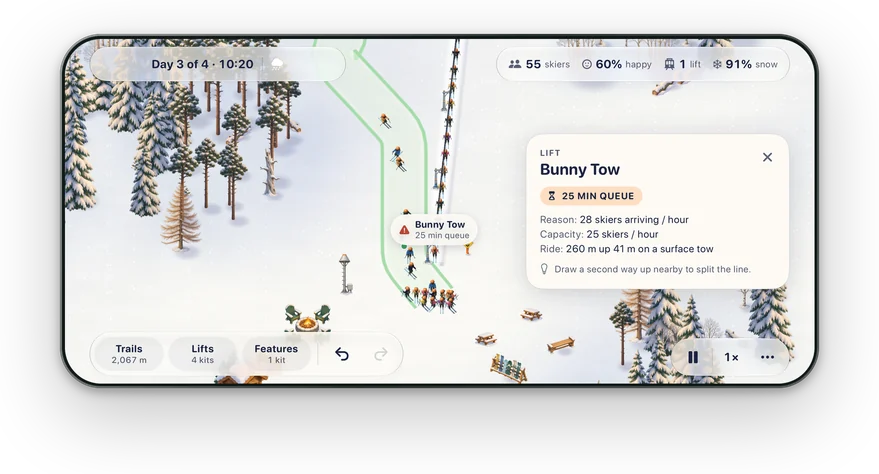

iPhone과 iPad용 스키장 경영 게임
작은 산 하나. 수많은 가능성.
슬로프와 리프트를 그리면, 작은 스키어들이 줄을 서고, 턴을 새기고, 새 눈을 쫓아갑니다. 한 번 구매. 광고 없음. 인앱 결제 없음.
한 번 구매, 광고 없음, 인앱 결제 없음, 계정 없음. 완전히 오프라인으로 돌아갑니다. iOS 18 이상.


플레이 방법
슬로프를 그리고, 달리는 모습을 보세요.
한 번 그으면 산이 움직이기 시작합니다. 그리는 것은 슬로프와 리프트뿐이고, 스키어도 날씨도 대기줄도 알아서 반응합니다.
-
1
슬로프 그리기
지형 위로 손가락을 아래로 끄세요. 경사는 지형이 정합니다. 급사면을 가로지르면 완만해지고, 곧장 떨어뜨리면 최상급이 됩니다.
-
2
리프트 돌리기
슬로프는 스키어를 아래로, 리프트는 위로 나릅니다. 줄이 생기는 곳은 리프트입니다. 토우리프트부터 시작해 능선에 체어리프트를 올리고, 정상까지 곤돌라를 보내세요.
-
3
달리는 모습 보기
초보자, 가족, 느긋한 사람, 상급자, 모험가가 각자 맞는 슬로프를 고르고, 줄을 서고, 새 눈을 쫓고, 지치면 돌아갑니다. 어딘가 막히면 게임이 그 자리를 짚어 줍니다.
지형이 정합니다
모든 슬로프에 난이도가 표시됩니다.
난이도는 색만이 아니라 모양으로도 표시되어, 색을 구분하기 어려워도 한눈에 읽힙니다. 가장 가파른 곳에는 마름모가 하나 더 붙습니다.
- 초록 원초급
- 파란 사각형중급
- 검은 마름모상급
원·사각형·마름모로 표시하는 방식은 북미 스키장에서 쓰는 것으로, 국내 스키장에서 흔한 초급·중급·상급 색 구분과는 다릅니다.
게임 화면
산을 가까이에서.

스키장을 그립니다. 
병목은 리프트입니다. 
작은 건물, 큰 차이. 
날씨가 모든 것을 바꿉니다.
여정
다섯 개의 산, 저마다 다른 성격.
각 산은 나흘에서 엿새짜리 짧은 시나리오이고, 메달이 세 개씩 있습니다.
여기 그림들은 산을 고를 때 나오는 장 삽화입니다. 게임 화면이 아니며, 게임 화면은 위에 있습니다.
Zen 모드에는 메달도 실패도 없는 산 9곳이 더 있습니다: Cinder Cone, Rimrock Mesa, Frost Lake, Iron Fjord, Twin Saddle, Serac Glacier, Nordic Vale, Cirque Bowl, Pipe Hollow. 산마다 풀어야 할 과제가 다릅니다.
-

1장 · 기초
Alpine Dawn
작은 마을을 내려다보는 트인 사면. 첫 슬로프, 첫 리프트, 그리고 첫 스키어들.
-
2장 · 대기줄
Pine Valley
리프트가 붐비는 하단 승강장으로 모이는 숲 골짜기. 줄이 계속 움직이게 하세요.
-

3장 · 눈
Glacier Basin
볕 드는 우묵한 곳 위의 얼음 분지. 눈을 오래 가게 하세요.
-

4장 · 바람
High Ridge
바람을 그대로 맞는 능선과 그 아래 보호된 슬로프. 높은 리프트가 멈추는 날을 염두에 두세요.
-

5장 · 한꺼번에
Three Peaks
세 봉우리가 마을 하나를 함께 씁니다. 대기줄도, 눈도, 바람도 한꺼번에.
산 자체가 조작 화면
작은 세계, 진짜 판단.
관리할 표도 메뉴도 없습니다. 리프트나 슬로프를 탭하면 왜 붐비는지, 무엇을 하면 나아지는지 보입니다.
스스로 고르는 스키어들
초보자도 가족도 상급자도 실력과 대기 시간, 설질을 보고 각자 길을 고릅니다.
병목은 리프트
대기줄은 실제 이용객 수와 실제 수송력에서 생깁니다. 붐비는 체어리프트를 증설하고, 사람이 다음에 어디로 몰리는지 보세요.
계획을 세울 수 있는 예보
예보가 폭풍과 바람, 포근한 날씨를 미리 알려 줍니다. 새 눈은 상급자를 부르고, 바람은 노출된 리프트를 멈출 수 있습니다.
눈에는 한계가 있습니다
볕이 드는 아래쪽은 눈이 얇아지고, 높은 분지는 쌓인 눈을 지킵니다. 어디에 짓느냐가 하루가 얼마나 버티는지를 정합니다.
아침마다 하나의 판단
리프트가 움직이기 전에 그날의 중점을 고릅니다. 나머지는 스태프가 합니다.
실행 취소, 일시 정지, 빨리 감기
모든 변경을 되돌리고 다시 실행할 수 있고, 언제든 멈출 수 있으며, 잘 돌아갈 때는 빨리 감을 수 있습니다.
여섯 가지 시설
하루의 모양을 바꾸는 여섯 가지 방법.
저마다 스키어의 동선, 눈이 버티는 시간, 혹은 산이 얼마나 안전하게 돌아가는지를 바꿉니다.
- 스노우파크주변 슬로프로 프리스타일 스키어를 불러옵니다.
- 고수송력 리프트더 많은 스키어를 올려 보냅니다. 그 위 슬로프를 살피세요.
- 난방 쉼터지친 스키어가 쉬고 몸을 녹이는 곳입니다.
- 정설차고가까운 슬로프를 날마다 다듬어 둡니다.
- 패트롤 초소날씨가 나빠져도 그 일대를 열어 두는 데 도움이 됩니다.
- 제설기추운 날 닿는 범위의 눈을 지켜 줍니다.
세 가지 플레이 방식
메달을 노리거나, 느긋하게 짓거나, 오늘의 봉우리에 도전하거나.
-
여기서 시작
여정
다섯 개의 산, 각각 메달 세 개. Alpine Dawn은 기초를, Pine Valley는 대기줄을, Glacier Basin은 눈을, High Ridge는 바람을, Three Peaks는 그 전부를 한꺼번에 시험합니다. 산 둘러보기
-
Zen
실패 없이, 자기 속도로 짓습니다.
-
오늘의 봉우리
날마다 새로운 산, 모두에게 같은 산.
편안한 플레이
산에 있는 모두를 위해.
손쉬운 사용과 편의
- 난이도를 색에만 기대지 않습니다: 원, 사각형, 마름모
- '동작 줄이기'를 따릅니다
- 넉넉한 탭 영역, 최소 44포인트
- 게임 속도 조절, 언제든 일시 정지
- 완전히 오프라인으로 작동
- iPhone은 가로, iPad도 지원
한 번 구매. 그게 전부입니다.
Snowline은 한 번 구매하는 게임입니다. 한 번 내면 끝입니다.
- 광고 없음
- 인앱 결제 없음
- 계정도 추적도 없음
- 만든 스키장은 기기에 남습니다
개인정보 처리방침 보기 (English)